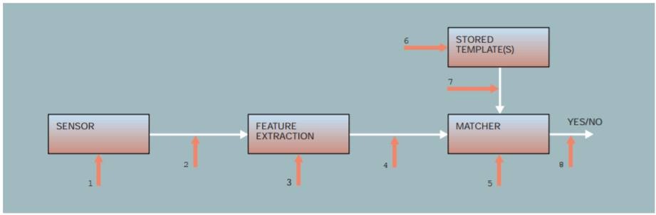

Normal passwords can be interfered with in three different places: on the wire and at either end. Finger print scanners have more working parts and are more complicated, therefore they have more possible points of attack.

For finger print scanners there are 8 primary points of attack:
1. Presenting fake biometrics at the sensor.
2. Bypassing to sensor to resubmit previously stored digitized biometrics signals.
3. Overriding the feature extraction process
4. Tampering with the biometric feature representation after extraction
5. Corrupting the matcher
6. Tampering with stored templates used by the matcher
7. Attacking the channel between the stored templates and the matcher
8. Overriding the final decision